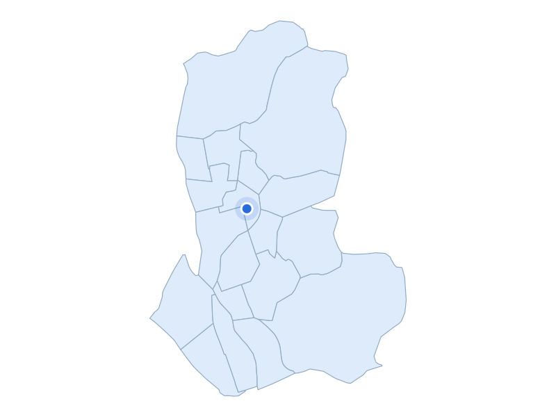

부동산 데이터 | 신혼부부가 사는 곳
거주 수 11위 · 서울 노원구

노원구 경춘선숲길 산책로·옛 철로
지역 자료사진 · 촬영 2020 · CC BY 4.0 / 공공누리 제1유형
거주 신혼부부 · 2024년
8,473쌍
주거 특징·랜드마크
노원구 상계·중계·하계는 택지개발로 형성된 아파트 생활권을 이루고 있습니다.
주거 특징·랜드마크
경춘선숲길은 열차 운행이 끝난 철길을 공원으로 바꾼 공간입니다.
주거 특징·랜드마크
주거지 사이의 옛 철로를 산책과 주민 교류에 활용하고 있습니다.

서울 노원구 · 실제 가격 집계구역
파란 점: 단지 위치
지역 아파트 실거래 중위값
8억 5,000만원
지역 거래 672건
단지 사례
상계2차중앙하이츠
8억 4,500만원
단지 거래 5건
2026-05-01 ~ 2026-10-31 계약
전용 83~85㎡ · 아파트 매매 · 취소 제외